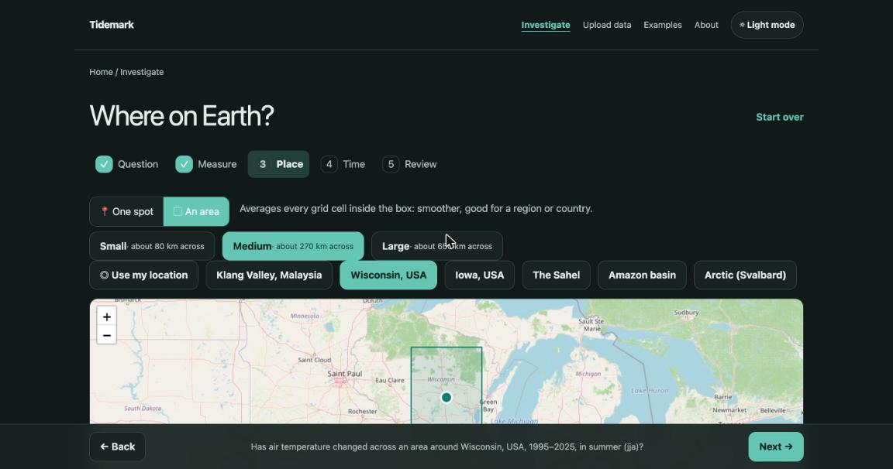
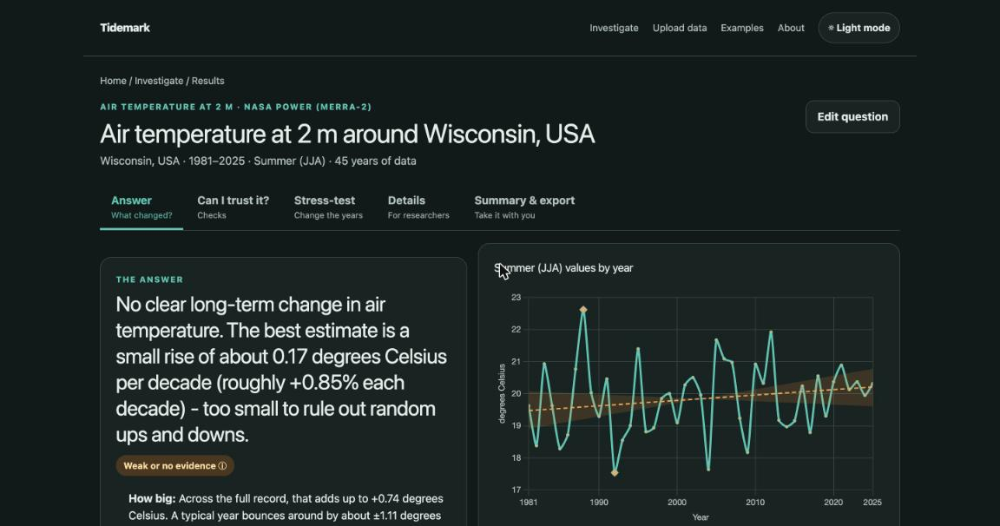
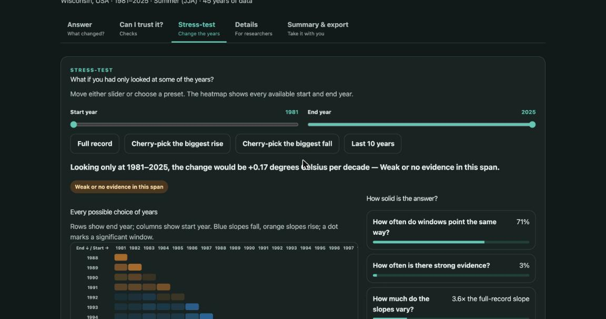

Read the marks Earth leaves.
Is that trend real? Ask any place on Earth, and find out in minutes, with NASA data and the evidence to back it up.
Chart: summer haze (aerosol optical depth) over Wisconsin, MERRA-2, plotted from Tidemark’s own example data.
Live NASA POWER data · no setup


Example: summer air temperature, Wisconsin, 1981–2025. No clear long-term change in this dataset.

Honest limits, in the app: reanalysis is not a direct measurement · overlapping windows are descriptive · AOD is not surface air pollution.
Built with AI assistance: Claude (Anthropic, via Claude Code) for research, concept, statistics, tests, interface and docs; OpenAI Codex and Cursor Agent for parts of early builds. Our team: decisions making, design choices, review, final testing and verification. Data: NASA POWER, MERRA-2. Libraries: Next.js, Chart.js, Leaflet, OpenStreetMap, pymannkendall. Not endorsed by NASA.
Tidemark · Read the marks Earth leaves.